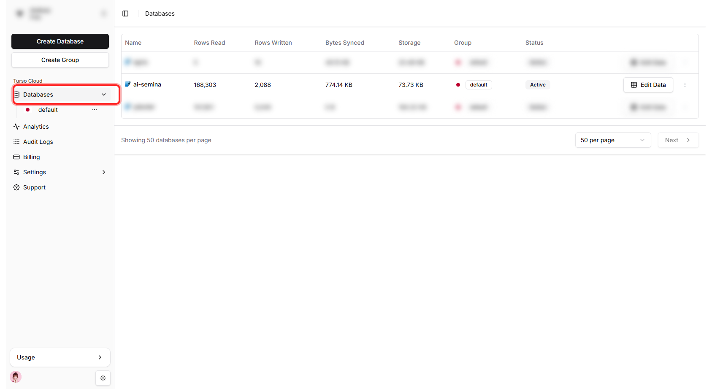
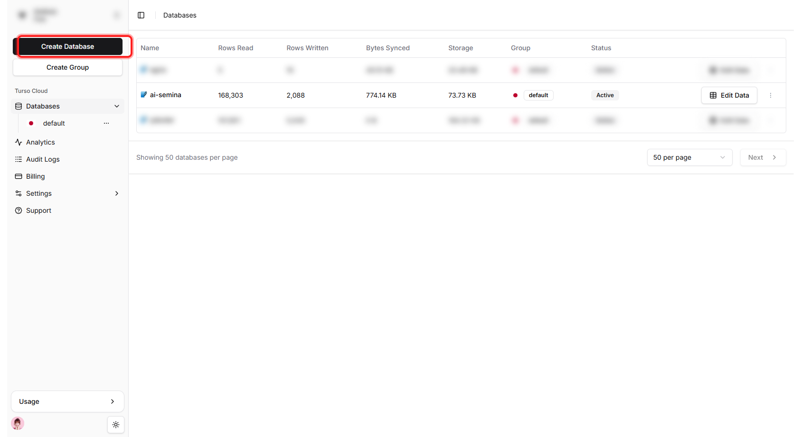
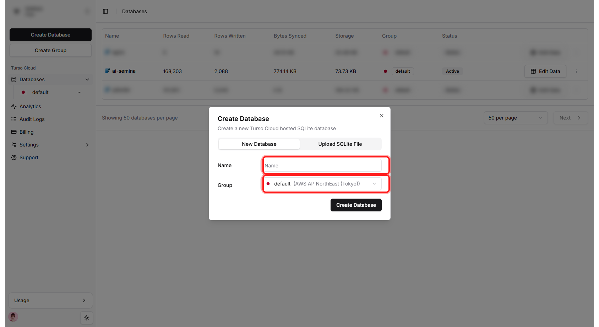
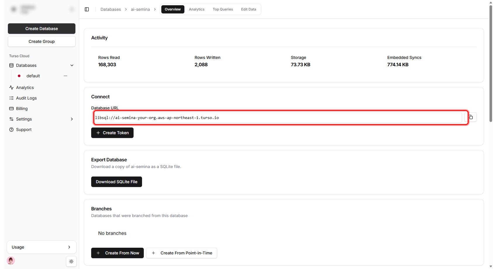
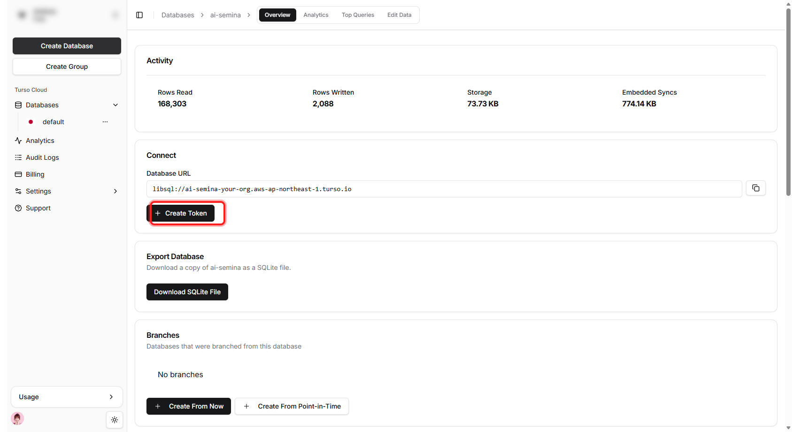
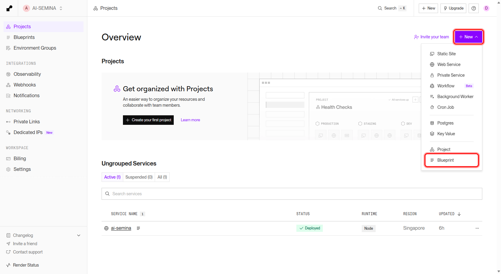
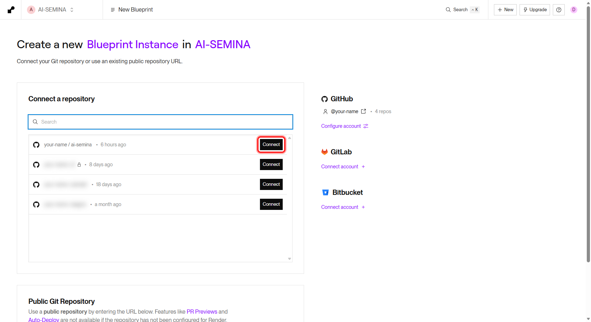
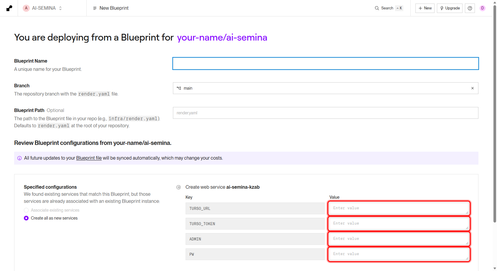
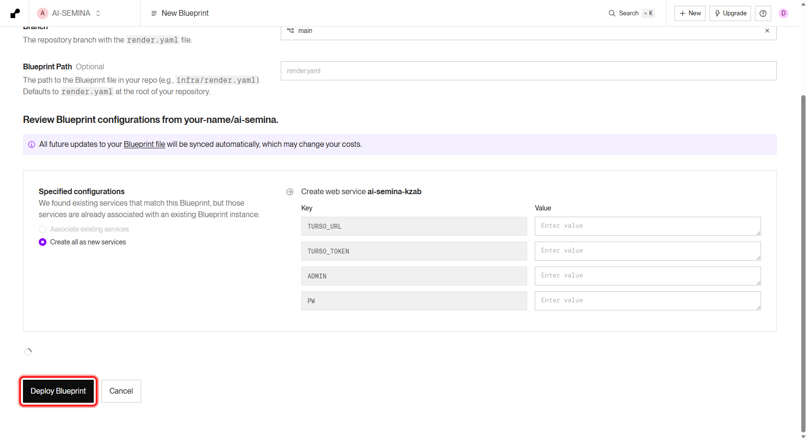

Turso Database 생성 & Render Blueprint 배포
이 프로젝트(AI 세미나 일정 투표)를 인터넷에 올리는 과정을 메뉴·버튼 단위로 정리한 자료입니다. Turso 에서 데이터베이스를 만들고, 그 접속 정보를 Render 에 입력해 배포합니다.
진행 순서
Render 에 배포할 때 데이터베이스 접속 정보(TURSO_URL, TURSO_TOKEN)를 입력해야 합니다.
그래서 ① Turso 데이터베이스를 먼저 만들어 두 값을 확보한 뒤, ② Render 배포를 진행합니다.
아래 단계도 같은 순서로 정리되어 있습니다.
Turso — Database 생성하기
Turso 는 가벼운 SQLite 기반의 클라우드 데이터베이스입니다. 이 프로젝트의 투표·확정 데이터가 여기에 영구 저장됩니다. 대시보드에서 데이터베이스를 만들고 접속 URL 과 인증 토큰 을 얻는 것이 목표입니다.
메뉴 경로
단계별 진행
-
대시보드 접속
app.turso.tech 에 접속합니다. (이미 로그인되어 있다면 바로 대시보드가 보입니다.)
-
Databases 메뉴로 이동
화면 왼쪽 사이드바에서 「Databases」 메뉴를 클릭합니다. 만들어 둔 DB 목록이 나옵니다.

■ 화면 왼쪽 사이드바의 「Databases」 메뉴를 클릭하면 데이터베이스 목록이 나옵니다. -
Create Database 클릭
왼쪽 사이드바 맨 위의 검은색 「Create Database」 버튼을 누릅니다. (Create Group 버튼 바로 위)

■ 사이드바 최상단의 검은색 「Create Database」 버튼. -
이름 입력 · Group(리전) 확인
「Create Database」 팝업이 열리면 Name 칸에 데이터베이스 이름(예:
ai-semina)을 입력합니다. Group 은 기본값default가 이미 AWS AP NorthEast (Tokyo / 도쿄) 리전이라 그대로 두면 됩니다 (Render 서비스 리전을 가까운 Singapore 로 맞춰 두었습니다). 입력 후 팝업 안의 「Create Database」 버튼으로 생성합니다.
■ Name 입력칸과 Group 선택 영역. Group 의 (AWS AP NorthEast (Tokyo))가 도쿄 리전입니다. -
생성(Create) 완료
아래쪽 「Create」 버튼을 누르면 데이터베이스가 만들어지고, 상세 화면으로 이동합니다.
-
접속 URL 복사 → TURSO_URL
목록에서 만든 데이터베이스를 클릭하면 상세 화면(Overview)이 열립니다. 「Connect」 섹션의 Database URL 에
libsql://<db이름>-<계정>.aws-ap-northeast-1.turso.io형태의 주소가 있습니다. 칸 오른쪽 끝 복사 아이콘으로 복사합니다. 이 값이 Render 의TURSO_URL입니다.
■ Connect ▸ Database URL 의 libsql://…주소. 칸 오른쪽 끝 아이콘으로 복사합니다. -
인증 토큰 생성 → TURSO_TOKEN
같은 「Connect」 섹션의 Database URL 바로 아래에 있는 「+ Create Token」 버튼을 누릅니다. 만료(Expiration)는 없음(Never), 권한은 기본(읽기·쓰기)으로 두고 생성한 뒤 화면에 표시되는 토큰을 즉시 복사합니다. 이 값이 Render 의
TURSO_TOKEN입니다.
■ Database URL 아래의 「+ Create Token」 버튼. 누르면 토큰 생성 화면이 열립니다. ⚠️ 토큰은 다시 볼 수 없습니다 생성 직후에만 전체 토큰이 표시됩니다. 창을 닫기 전에 반드시 복사해 두세요. 잃어버리면 새 토큰을 다시 발급하면 됩니다.
(참고) CLI 로 만드는 방법
대시보드 대신 터미널에서 만들 수도 있습니다.
turso db create ai-semina
turso db show ai-semina --url # TURSO_URL
turso db tokens create ai-semina # TURSO_TOKENRender — Blueprint 으로 배포하기
Render 는 GitHub 저장소를 연결하면 자동으로 빌드·실행해 주는 배포 서비스입니다.
이 프로젝트에는 render.yaml(Blueprint 정의 파일)이 이미 들어 있어,
Render 가 서비스 설정을 자동으로 읽어 들입니다.
준비물
- 이 프로젝트가 GitHub 저장소에 push 되어 있을 것 (
render.yaml포함,.env는 제외) - 위 1번 Turso 에서 만든
TURSO_URL·TURSO_TOKEN - 관리자 로그인용
ADMIN·PW값
메뉴 경로
단계별 진행
-
대시보드 접속
dashboard.render.com 에 접속합니다. (이미 로그인되어 있다면 바로 대시보드가 보입니다.)
-
New + → Blueprint 선택
Overview 화면 오른쪽 위의 보라색 「+ New ▾」 버튼을 누르면 드롭다운이 펼쳐집니다. 목록 맨 아래의 「Blueprint」 항목을 클릭합니다.

■ 오른쪽 위 「+ New ▾」 버튼 → 드롭다운 맨 아래 「Blueprint」. -
GitHub 저장소 연결
「Connect a repository」 목록에서 이 프로젝트(
ai-semina) 줄 오른쪽의 검은색 「Connect」 버튼을 누릅니다. 목록에 없으면 오른쪽 GitHub ▸ 「Configure account」 로 Render 에 저장소 접근 권한을 먼저 부여합니다.
■ ai-semina저장소 줄 오른쪽의 「Connect」 버튼. (다른 저장소명은 가림 처리) -
render.yaml 자동 인식 확인
Render 가 저장소의
render.yaml을 읽어 서비스(ai-semina, Node, Singapore 리전) 를 자동으로 표시합니다. 상단에 Blueprint Name 을 입력하는 칸이 있으면 알아보기 쉬운 이름(예:ai-semina)을 적습니다. -
환경변수(Environment Variables) 입력
render.yaml에서sync: false로 지정된 값들은 보안상 저장소에 넣지 않으므로, 이 화면에서 직접 입력해야 합니다. 아래 4개 값을 채웁니다.Key 입력할 값 TURSO_URLTurso DB 주소 libsql://....turso.io(1번에서 복사)TURSO_TOKENTurso 인증 토큰(JWT) (1번에서 복사) ADMIN관리자 로그인 아이디 (직접 정함) PW관리자 로그인 비밀번호 (직접 정함) NODE_ENV=production은render.yaml에 이미 들어 있어 따로 입력하지 않아도 됩니다.
■ Key 칸(TURSO_URL · TURSO_TOKEN · ADMIN · PW)은 고정되어 있고, 오른쪽 Value 칸에 값을 입력합니다. 이미 배포한 적이 있다면 동일 저장소로 Blueprint 를 다시 만들 때는 「Associate existing services」 / 「Create all as new services」 선택지가 나옵니다. 처음 배포할 때는 이 선택지가 없으며 서비스가 새로 생성됩니다. -
Deploy Blueprint(배포 시작) 클릭
맨 위 Blueprint Name 에 이름(예:
ai-semina)을 입력한 뒤, 화면 맨 아래 왼쪽의 검은색 「Deploy Blueprint」 버튼을 누르면 배포가 시작됩니다.
■ 페이지 맨 아래의 「Deploy Blueprint」 버튼. (오른쪽 「Cancel」 은 취소) -
빌드 · 배포 로그 확인
서비스 화면의 「Logs」 탭에서 진행 상황을 볼 수 있습니다.
npm ci(빌드) →npm start(실행) 순으로 진행되고,[DB] 운영 모드: Turso 원격 DB 사용로그가 보이면 DB 연결 성공입니다. -
서비스 주소로 접속 확인
배포가 끝나면 화면 상단에
https://ai-semina.onrender.com형태의 주소가 생깁니다. 눌러서 사이트가 열리는지 확인합니다.
render.yaml 에 autoDeploy: true 가 설정되어 있어,
앞으로 GitHub 에 git push 만 하면 Render 가 자동으로 다시 빌드·배포합니다.
배포 전 확인
아래 항목이 모두 준비되면 Render 배포가 정상 동작합니다.
배포 성공 로그 예시
[DB] 운영 모드: Turso 원격 DB 사용
[DB] 연결 및 테이블 준비 완료